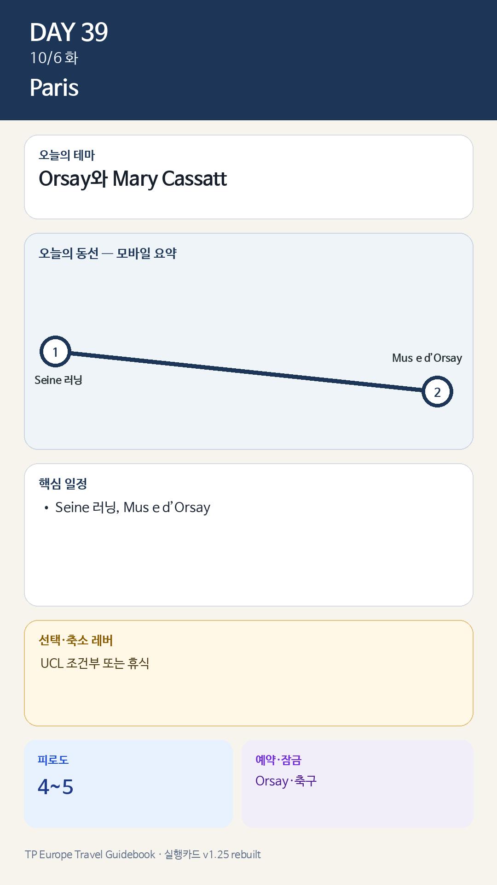

Day 39 · 10/6 화 · Paris

카드의 지도영역은 일정 순서를 보여주는 개요이며 내비게이션이 아닙니다. 실제 도보·운전 경로는 Google Maps에서 다시 계산하세요.
시간표
| 시간 | 일정 | 실행 포인트 |
|---|---|---|
| 08:00–09:00 | Seine 5–7km 러닝 / Julia 산책 | 저녁 축구 가능성 고려 |
| 10:00–11:30 | 느린 아침·휴식 | 개막일 혼잡 대비 |
| 12:00 | 숙소 점심 | 시간지정표 준비 |
| 14:00–17:45 | Musée d’Orsay | Mary Cassatt 개막전 + 상설 1개 층 |
| 17:45–18:30 | Seine 강변 휴식 | 전시 직후 일정 비움 |
| 저녁 | PSG UCL 홈경기 발표 시 경기 | 없으면 숙소식·동네 저녁 |
이 날의 메모
Orsay와 Mary Cassatt — 개막일은 짧고 집중해서
Musée d’Orsay 대시계와 센강
- 설명: 기차역 건축과 인상주의 컬렉션을 함께 상징하는 이미지.
피로도: 기본 4 / 축구 시 5.
관람 규칙
- Mary Cassatt 특별전 90분.
- 상설관은 인상주의 또는 19세기 조각 중 하나.
- 사진촬영보다 창과 대시계가 만드는 공간을 즐긴다.
- 개막일이 지나치게 혼잡하면 10/8 또는 10/9로 이동한다.
오늘 확인할 것
- 핵심 실행
- Orsay·조건부 UCL
- 권장 출발
- 예약 60분 전 출발
- 완충
- 경기 시 오후 3시간 휴식
- 최고 리스크
- 박물관+경기 과밀
- 우선 삭제
- UCL 또는 추가관람
- 대체안
- Orsay 핵심만
- 식사·휴식
- Orsay 전 가벼운 식사
- 잠금 필요
- Orsay·축구
이 날의 장소
일자별 시간표와 본문 표기에서 찾은 것이다. 하루의 전부가 아니라 장소 카드가 있는 것만 담는다.